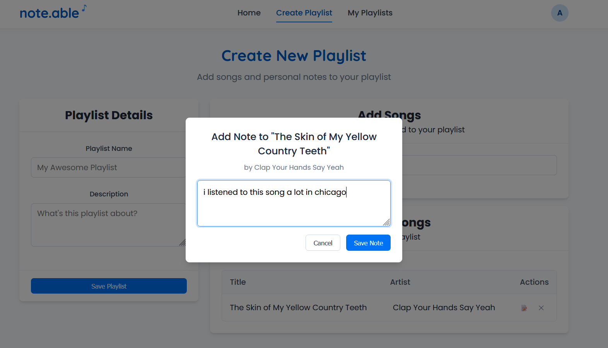

Imagine a tool like Scratch, but instead of teaching programming concepts, it teaches the fundamentals
of computer engineering-- enabling students to play with digital logic, building from a simple nand gate to a fully functioning RISC-V processor.
We developed a modular, hands-on system called Chiplet that aims to accomplish this.
final presentation poster for capstone
NOTE.ABLE (WIP)
I had this idea to make a social media app that allows users to annotate playlists. Being able to
curate a playlist for a loved one and leave personalized notes explaining each song's significance, or just leave notes
on songs for your personal reference (recounting a memory, a remark about a song's sample, etc). Spotify is one of my favorite social medias to lurk on--
I wish there was more personalization and customization! More logging abilities!

screenshot of note.able's note-adding functions.
I was able to work on the database for this project in my CS3200 Intro to Databases class, but have been continuously developing the rest of it on my own time.
Tech stack at the moment is React, Node.js, and MySQL.
FPGA SOBEL ALGORITHM
This was my final project for EECE4632, Hardware-Software Codesign for FPGA-Based Systems. Using a PYNQ-Z2 FPGA, Vitis HLS and Vivado,
I built out a Sobel edge detection algorithm using hardware resources that was slightly more efficient than its software companion. Check
out the final presentation here.
Feel free to reach out for any code samples!
MSPAINT PIXEL DRAWER
I've been an MSPaint believer since sixth grade, when I would draw My Little Pony characters using nothing but a trackpad and a dream.
You may have noticed many of the visual elements of this website were drawn on MSPaint.
a comic i made in high school using mspaint
Paint was awesome. It was simple, easy to use, and reliable. Microsoft recently updated Paint and, unfortunately, the settings I previously
used for my drawings are now gone or unusable. No worries! I have Python.
This project, made from tkinter/pillow, replicates the pixel-editing capabilities I used to love in MSPaint. It's easy, it's simple,
and it has my favorite MSPaint settings, such as square-shaped brushes and no layers. Some of the images on my site now were made from it!
This was the final project for CS4530, Software Engineering. Working with a team of four through an Agile approach, as well
as implementing a CI/CD pipeline,
we modified the starter code base of Fake Stack Overflow and created OverCode-- a collaborative coding platform
that allows users to create leetcode-style coding problems, collaborate in real-time, and compete against all users
on global leaderboards.
Built with React and MongoDB, the platform features secure code execution for testing and performance profiling. Testing was done
via Jest.
overcode UI screenshot
TETRIS GENERATOR
This Python script was inspired by a conversation with a friend of mine who was building a modified Tetris (modified meaning Tetris with randomly-generated pieces of n size).
I created a basic shape generator using Pygame. The program runs a game loop where users input a number between 1-10 in a text box, which determines how many squares will make
up the random shape.
shape generator gui
When the user hits enter, the program generates a connected sequence of squares starting from the center of the screen. Each new square attaches to the previous one in a random direction without overlapping existing squares.
The save button saves the generated tetrimino as a PNG image.
I implemented error handling for invalid inputs and built the shape storage using a deque data structure, which tracks square positions and their colors.
Check out the extremely intricate, highly-principled project here.
GENERATE: ALIA
Generate is Northeastern's student-led product studio. Our team was building for Alia, a Shopify plugin that
enabled vendors to create loyalty programs-- customers could take a quiz to learn about the business and earn coupon codes in exchange.
Our tech stack included TypeScript, React, Node.js and PostgreSQL with GraphQL.
FUSE FILE SYSTEM
This was the final project for CS3650 (Computer Systems). I built a FUSE filesystem driver in C that allows a user to mount a 1MB disk image as a working filesystem.
We implemented core operations including creating, reading, writing, and deleting files; managing nested directories; and handling files of different sizes (4KB to 500KB).
We also designed the underlying storage structures for efficiently organizing file data and metadata within the limited space. The project required careful memory management
to ensure all operations completed without corruption.
BULLET JOURNAL APPLICATION
For our final project in CS3500 (Object-Oriented Designed), I built a Java bullet journal app that digitized weekly planning. Our team of 3 implemented core features like week view, task/event creation,
and data persistence, along with customizable themes and a task queue system. The project expanded in phases, challenging us to maintain extensible code following SOLID principles.
We delivered multiple releases with wireframes, UML diagrams, fun features, and well-tested code, finishing with a live demo of our working application.
BATTLE SALVO
This was one of the larger projects for CS3500. Following the MVC architecture and SOLID principles, we created BattleSalvo,
a networked BattleShip clone that evolved from a human-versus-computer CLI to a multiplayer game with client-server networking. I implemented a communication protocol using JSON,
enabling players to battle against both an AI opponent and other players through socket programming. Testing was performed using JaCoCo and Gradle.
MENTAL HEALTH OUTREACH (WIP)
I have an ongoing project focused on advocating for mental health resources and education. There are a few things brewing,
but for now here's an article I wrote for the Huntington News targeting the university's inadequate mental health resources.
A COMIC COLLECTION (SUPER WIP)
I've had the idea of wanting to develop a full fledged
comic series. I've always been drawn to essay series or anthologies so it'd probably be something like that. I'll add a blog here someday to
update this project.